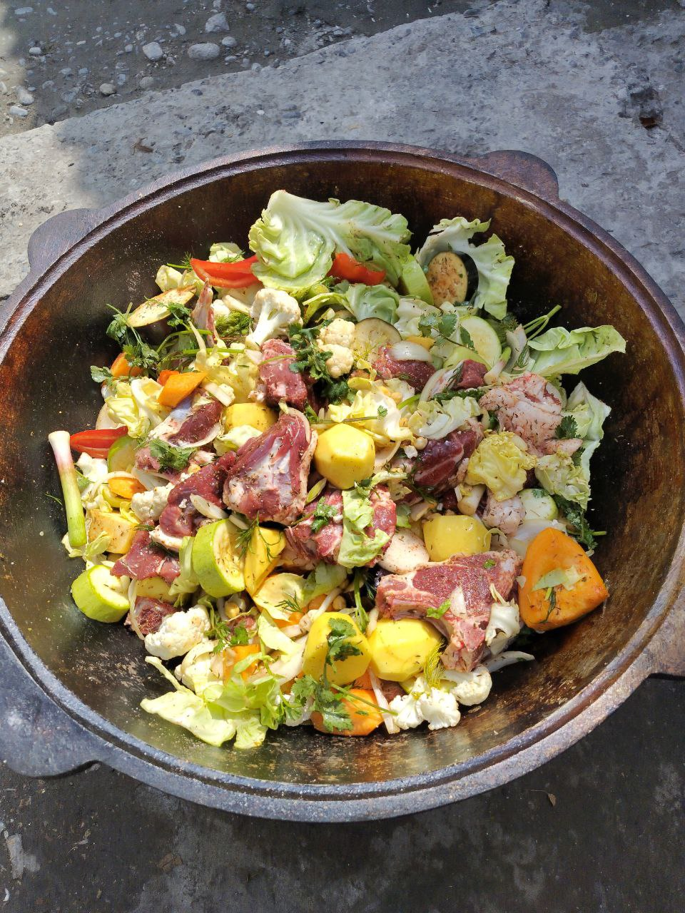

Basma

Description
Basma is a stew full of rich flavour. It is made by extended steaming of meat and vegetables in own juices.
The beauty of Basma is that there is no fixed set of ingredients. Get some meat and put any vegetables you have lying around - will work just fine.
Ingredients
- Meat (lamb or beef) - 1 kg;
- Onions - 4 medium sized;
- Tomatoes - 3-4 pieces;
- Carrots - 2 pieces;
- Potatoes - 3-4 pieces;
- Bellpeppers - 1 or 2 pieces;
- Optional: pre-soaked chickpeas - 1 cup;
- Optional: any or all of the following: eggplants, zucchini, cauliflower, turnip, radish, pumpkin, seasonal herbs, plus whatever you love - 1 or 2 pieces each, to taste;
- Small cabbage - 1 piece;
- Vegetable oil - 2 cups.
Steps
- Cut all ingredients into medium sized pieces.
- Combine everything in a large pot.
- Eyeball the volume and measure salt required into a large cup. Add 2 teaspoons each of cumin and coriander seeds, crushed black pepper to taste.
- Thoroughly mix all ingredients with salt and spices.
- Pout oil over so that it touches all products before flowing to bottom.
- Put the pot on abobe medium heat, close tightly with a lid and heat until everything is hot, sizzling and then starts steaming as juices render.
- Continue cooking on medium heat for 1 hour 30 minutes, up to 2 hours, until all the liquid has evaporated and the pot starts sizzling again. If that happens sooner, reduce heat to minimum.
- Remove from heat, serve and enjoy!
Back to List